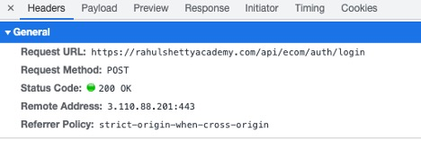
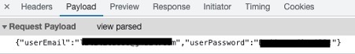
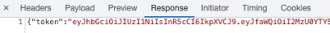
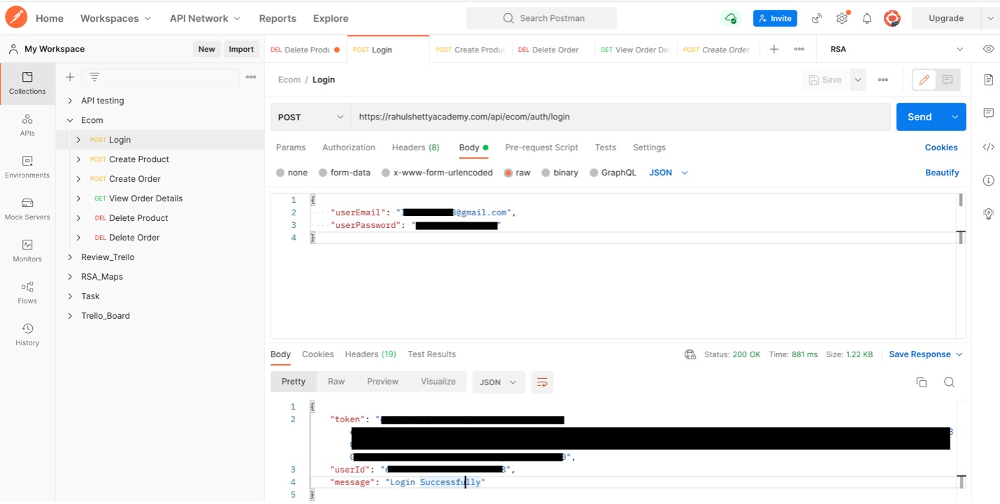
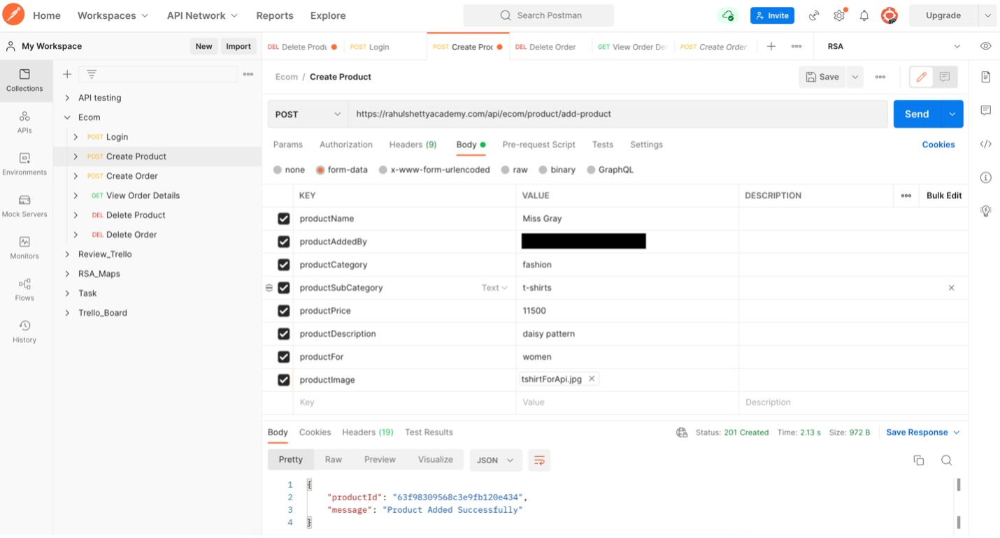
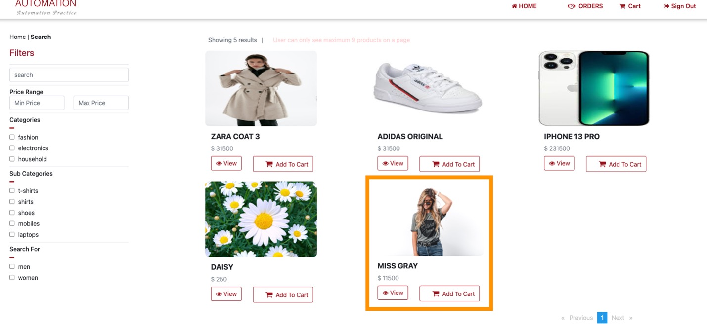
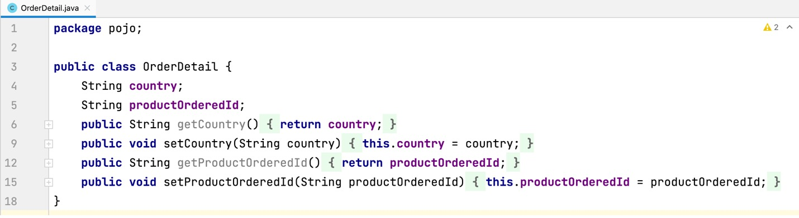
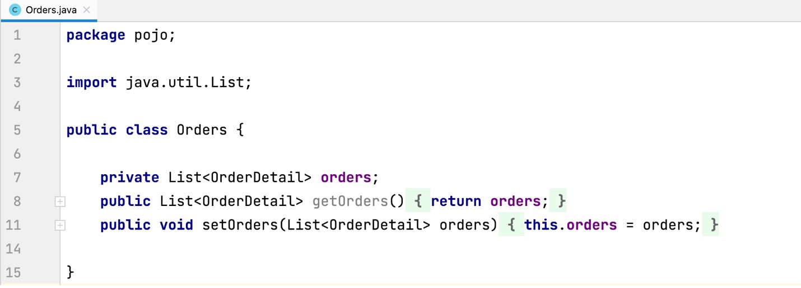
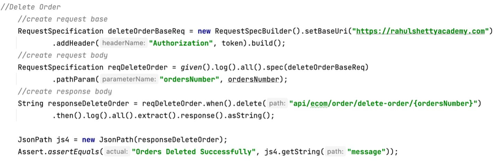

Feature testing using API
- Website Tested: https://rahulshettyacademy.com
- Source Code Management Tool: Github
- IDE: IntelliJ IDEA CE
- Language: Java
- Manual Testing Tool: Postman
- Automation Testing Tool: Rest Assured, Selenium WebDriver
OVERVIEW
PROJECT
This project is to create an automated end-to-end flow. Instead of using standard user inputs (keyboard) and outputs, I use software to send calls to the API, get output, and note down the system’s response. The flow starts on Login API > Create Product > Purchase Order on created Product > Delete Order > Delete Product on an online shopping website by using API. I use Postman for manual testing first. Then, I write the code by using Rest Assured to automate.
- Endpoint: a specific point of entry in an API and it is the most crucial part of an API’s documentation. For example, after I logged in to the application, I can see some detail in the “ Header part”. The detail of the Request URL is the endpoint. The next one is the Request Method, Login process will be used “POST” to submit an entity to the specified resource. Then, the Status code 200 OK means the login is successful. 
- HTTP Method: a set of request methods to indicate the desired action to be performed for a given resource. The methods that I use for this project will be GET (requests a representation of the specified resource), POST (submits an entity to the specified resource), PUT (replaces all current representations of the target resource with the request payload), DELETE (deletes the specified resource)
- Request Payload: the data you sent to the server when making an API request. Here iis the example of the JSON payload is sent for the endpoint to login. 
- Response: below is the response that I got. There are token, userID, and also message “Login Successfully”. I have to use this token as an authorization in all subsequent calls what I make in this application. 
WHAT DO I DO TO START API TESTING?
MANUAL TESTING USING POSTMAN
I created the collection to test the flow, starting from the login process. Like the activity I did above, I select method “POST”, put the Endpoint, put the body in JSON format, and the send the body or payload. I got the response back with the token, userID, and message.
Then, I created a Product to post on the application. There is a form that I have to provide. After sending the request, I got status code “201 Created” and also the response body with productid and a message to confirm that “Product added successfully”
Here is the added product display on the application.
I also create order, view order details, delete product, and delete order by using different method form, and body on Postman to make sure they will work when I write the code for automation.
AUTOMATION TESTING USING REST ASSURED
In this step is to test APIs using java libraries and integrates with Maven. Rest Assured has methods to fetch data from almost every part of the request and response no matter how complex the JSON structures are. I started my project on IntelliJ IDEA and create a Maven project, adding the necessary dependencies in pom.xml. Moreover, I use Serialization by creating java object from the POJO (plain old java object) class where all the attributes of the request is been defined with in a class as per the required payload structure and passed this object as a request with in the body keyword as a parameter in rest assured.
 I also use RequestSpecification to group and extract repetitive actions like setting up base URL, headers, etc which may be common for multiple Rest calls. The extracted common code can be used in different requests thereby reducing the number of lines of code and increasing maintainability.
